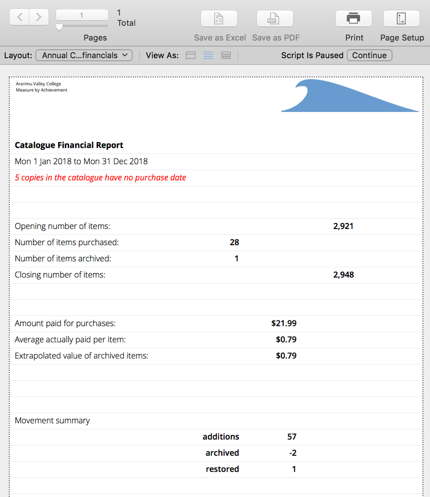

Reports
How reports work
Reporting is conceptually simple. Normally, reports a generated in one of two ways:
- Clicking a button for a "canned" report
or
- navigate to a module
- finding a set of data
- then summarising that data in an appropriate way
Reports are generally previewed on screen and then you can choose It may also involve exporting data to a .csv file, an Excel spreadsheet, or even an HTML table.
Navigate to a module
Most reports are associated with a module or area of Athenaeum, such as circulation, catalogue (copy/title/both), or history as defined in the structure chapter:
For example, purchase reports are generated in the catalogue Copies module. Current issues and overdue reports can be found in circulation. Historical issue activity reports are found in the History module and so on.
Finding data
To find data, go to the Athenaeum module that contains the data you are looking for (e.g. Catalogue, or Issue History) and perform your find using one of the standard methods:
- filtering
- custom find
-or-
Start at a particular location and show the related information to that location. For example, you may wish to view the issue history for borrowers of a particular ethnicity or gender. In that case, find the aforementioned borrowers and switch to the borrower list view and then click command->list history. The found set in the issue history is now the set of data for the report.
Choose and generate the report
While viewing your found set of data, click the print button at the top of the window and choose from one of the print reports.
Each module in Athenaeum has a print button, however the options for each module will be different.
Each print option should be obvious, where it's name indicates how the found set of data will be grouped. For example, the first print option will generally print the list more or less as it is displayed on screen. Some reports, such as the plain catalogue print report or the "by item/title" history report behave slightly differently if you hold the shift key when you trigger the report.
Note
Some print options behave slightly differently if you hold the shift key down while you launch the report. For example, some of the issue reports allow you to specify the report heading if you want that to be different to the default heading.
Reports normally preview to screen before printing - allowing you to review the content of the report before taking further action. After the preview, you are prompted with the standard print dialog box where you can print or cancel the print.
Annual Reports
The following are some reports that many organisations find useful at the end of a calendar year.1
Annual Summary
The annual summary calculates catalogue or library activity for the specified year:
- number of new books as well as copies returned from the archive during the year are counted and their purchase costs totaled,
- amounts paid summarised
- items archived during the year are counted
- movements (catalogue additions, archives and restores) are summarised
- an overview of the number of items, age and value of the entire catalogue or specified library is generated.
Accuracy
The accuracy of the figures in this report are dependent on information entered into the catalogue and archive. Correct purchase dates and costs entered for each amount are vital for accurate reports. Also, if you permanently delete entries in the catalogue or archive, you may cause differences with previous year's results.
 Create it from the catalogue utilities window.
Before generating the report, Athenaeum will check purchase and archive dates. If dates are missing, a warning is displayed before the report is generated.
Note
These dates must be fixed if you want accurate data. An educated guess is generally better than no date.
If you are using "Libraries", you can choose a specific library upon which to report, or the entire catalogue.
Enter the year start date for analysis. This will default to your year start, however you can choose any start date on the fly.
Note
If you don't use "libraries" then the library selection option is not presented
After a few moments the report is generated ready to print out.

Use this report with the other financial summaries that Athenaeum can generate for you.
Yearly Spend
The yearly spend report lists the recorded purchases for each of the last 10 years.
Before generating the report, Athenaeum will check purchase and archive dates. If dates are missing, a warning is displayed before the report is generated.
Reminder
These dates must be fixed if you want accurate data. An educated guess is generally better than no date.
 If you are using "Libraries", you can choose a specific library upon which to report, or the entire catalogue.
Enter the year start date for analysis. This will default to your year start, however you can choose any start date on the fly.
Note
If you don't use "libraries" then the library selection option is not presented
For each year, Athenaeum looks in the catalogue and the archive counting the number of items “purchased” in those years and sums the amount paid, the unpaid component and the payment “value” (paid +unpaid).
If Athenaeum finds items in either the catalogue or the archive that do not have purchase dates recorded, a warning message is displayed at the bottom of the report.
The first page shows simple charts of the annual counts of purchases and the annual actual spend (total of amount paid for each year). Subsequent pages show the table of numbers.
Movement Summary
The movement summary lists brief details for all recorded additions, archives, restores and archive deletions for the selected year and optionally the selected library.
You are prompted for the year start date (this does not have to be the first of the year). If you are using Libraries, then you can optionally select the library from the pop-up menu. Not specifying a library will return all recorded movements for the specified period.
You can also add an optional note that will be included at the end of the report.
When the report has finished, the text of the report is copied to the clipboard and can be immediately pasted into a spreadsheet, word processing document or email.
Purchases in a calendar year
Navigate to COPIES and click the Find button at the top left to start a custom find.
In the purchase date field, enter the desired year as a four digit number. Athenaeum will know that you want any date in that year and will deal with it appropriately. As an aside, you could also enter a date range with a start and finish date separated by three dots. E.g. 1/1/2013...31/12/2013 - or on computers configured to use US date format, you would enter 1/1/2013...12/31/2014
Press the enter key and the list of purchases for that year is presented.
If you wish to constrain your search to a specific library, you can choose a library from the library pop-up menu at the top right.
Of course, as with other finds, you may add other criteria to your search, such as for copies that have no paid value, etc.
Use the Print menu to choose a report.
Note
This search does not include purchases for that year that have been archived. You can find those by repeating the process in Archive._
Historical Issues for a particular year
This year or last year
Historical issues can be found in the History module ("H" from the main menu).
You may easily find issues for the current and previous years simply by choosing those options from the filter menu.
Other years
To find issues for other years, the process is almost identical to that described for finding purchases in a particular year.
Navigate to the history and click the Find button at the top left to start a custom find.
In the issue date field, enter the desired year as a four digit number.
Press the enter key and the list of issues for that year is presented.
Use the Reports button to choose a report.
Stock Take Missing
Once you have finished your stock take, the easiest way to find items that were not included in that stock take is start with the Missing Report button:
You are then prompted to refine the missing report by specifying
- the library (if you use them)
- the stock take run (usually the year number)
- whether you wish to include items "out" of the library
- whether to include "not for issue" items
When the search is complete, you have a found set of items that you may then base a number of reports upon. For example, you might print out the list grouped by location. Or you may create an Excel spreadsheet or financial breakdown for your accountant.
Most popular reports
Overdue
The quickest way to generate overdue lists is to start with the overdue buttons at the top of the main Athenaeum screen:
You may also define one of the buttons on the main menu to list the Overdue items, if you like:

These quickly generate lists in circulation of overdue items.
Recent or Less Recent?
Conveniently, you may define "recent" in Admin->Issues and is the number of days an issue is overdue before it becomes "less recent".

It then becomes a quick task to find "recent" overdues and then print/email a gentle reminder to the patrons that their issues have just become overdue and to attend to those and then find "less recent" overdues and send sterner communication to those patrons.
Choose your Report
Once you have your list of overdue items, you can generate any of the standard reports, with or without book cover images:

tip 1: you can specify a default heading for some of the issue list reports in the Issues tab of Admin
tip 2: hold the shift key when starting some of these reports to specify a heading different to the default heading
This is covered in detail in the Overdues Chapter.
Quick Stats
You can quickly see
- current statistics about your catalogue
- the list of top issued titles
- top borrowers
on the Quick Stats tab of the main menu:
You can choose the period of time you wish top issues/borrowers to be calculated.
If you select a library from the pop-up menu, then top issues are restricted to that period.
After generating your quick stats, you can copy the content to the clipboard by clicking the Copy to the Clipboard.
Most Issued
The most issued report is different from the top titles in that:
- it is based on the found set of issue history, meaning you can compare issues over different periods of time or different groupings of borrowers, for example
- it can be generated for titles or copies
Because this is an issue history report, navigate to the history module and find your set of data.
Choose
- Print->by title or
- Print->by copy
The report is previewed to screen, with book covers, if you have them. You can output this report to print, pdf, email.
Top Borrowers
For a more detailed top borrower report that you get with Quick Stats above,
This is an issue history report and is based on the found set of history items.2
Generate this report with Print->Group by borrower
Catalogue Statistics
You can generate statistics for any found set of COPIES in the catalog, grouped by your choice of fields.
Find the Copies you wish to summarise in the Copies module.
Remember you can go directly to the COPIES module and search, or you can go to the Titles, search and then show the corresponding copies.*
Choose Print->Statistics

Next, select how you would like to group the report:
The report is summarised according to your criteria. Note that if you don't have values in catalogue items for the items that you are summarising, then "empty value" appears in place:
Depreciation is calculated by subtracting the purchase date from the depreciation date to calculate an age and then applying the annual depreciation rate over that age to the purchase price. It is not compulsory to calculate this.
-
These reports can be re-genenerated for prior years if necessary. ↩
-
e.g. you might find issue history for a period of time in the history module, or you might find a cohort of borrowers in the borrowr module and then click command->List History to list the history for that cohort in the issue history module ↩